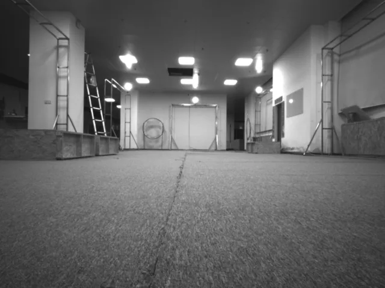
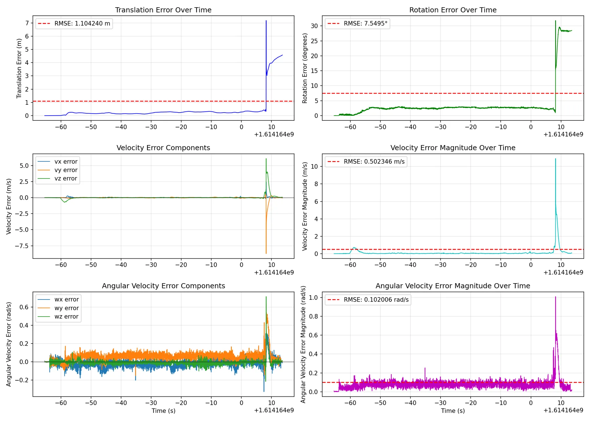
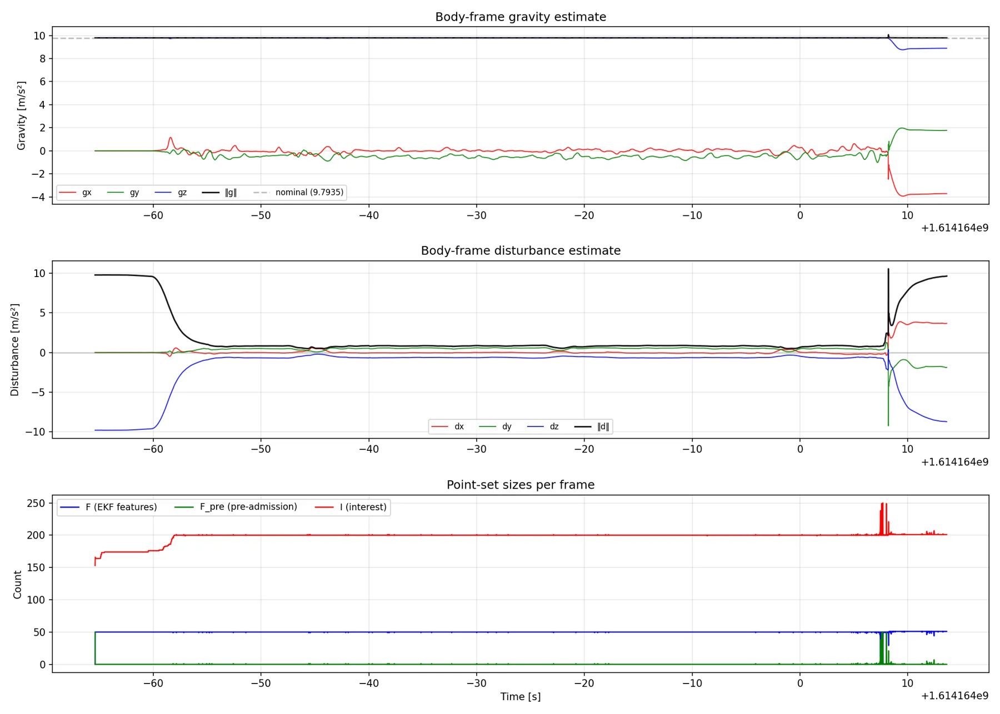

基于稀疏场景流的无 IMU 四旋翼机体系状态估计IMU-Free Body-Frame State Estimation with Sparse Scene Flow for Quadcopters
直接覆盖 learning/geometric optimization 邻近的可靠状态估计、bundle adjustment、场景流和不确定性。
一句话工作总结
强调 body-frame、显式协方差和场景流输出，是无 IMU 或 GNSS-denied 条件下的可靠估计基线。
完整单篇海报（待补全）
当前记录尚未达到完整海报质量门槛，暂不把摘要或评分理由冒充方法/实验结论。
待补字段：核心结论、动机与问题、方法总览、关键技术细节、实验设置、实验数字与比较。下一次任务需从论文全文或官方 HTML 提取证据后再发布。
摘要
系统仅使用同步双目图像和电机推力命令，在机体系内通过连续—离散 EKF 估计状态，并以四视图 bundle adjustment 联合估计稀疏点的位置、速度和协方差，通过统计门控筛选静态点。
We present a vision-only state estimation system for X-configuration quadcopters equipped with a canonical stereo camera pair and no inertial sensors. The system operates entirely in the body frame, requiring only synchronised stereo images and motor thrust commands. A continuous-discrete extended Kalman filter on a composite manifold state $\langle SE(3), \mathbb{R}^3, \ldots \rangle$ maintains estimates of body-frame pose, velocity, angular velocity, gravity, and disturbances, using stationary scene points as implicit inertial references. Feature points are detected (FAST, Shi-Tomasi), tracked temporally (SSD, Lucas-Kanade) and matched across cameras (NCC), with search regions predicted from filter-derived pose and point uncertainty. Chi-squared gating on the normalised innovation admits only stationary points to the filter. The system also produces a sparse 3D point cloud carrying per-point position, velocity and joint covariance. These come from a 4-view (two stereo pairs at two timestamps) full bundle adjustment that jointly estimates position and velocity from stereo disparity and temporal parallax, with the filter-derived relative pose as a prior. Feature points in the EKF do not enter the solver; their information is reflected through the pose prior. Point cloud density is spatially adaptive: an external focus point directs allocation, producing dense coverage in the region of attention and sparse coverage elsewhere. The output is a body-frame state estimate, a calibrated pose change, and a sparse scene flow. It is intended as a measurement source for a downstream world model anchored in the current body frame, without dependence on GPS, IMU, or any world-frame infrastructure, though the architecture accommodates their future integration.
图表/页面预览
{kind=link}

{kind=link}

{kind=link}
